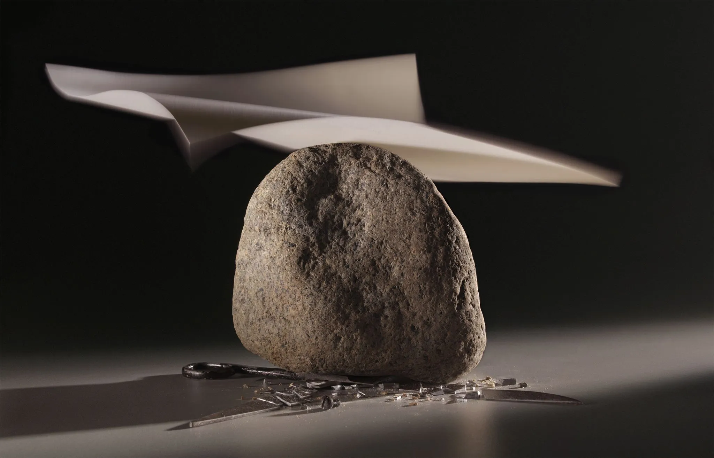
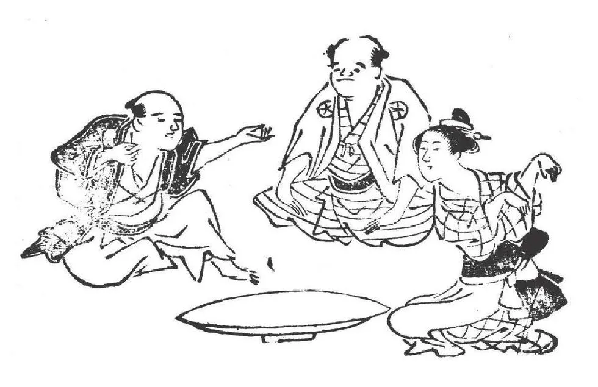
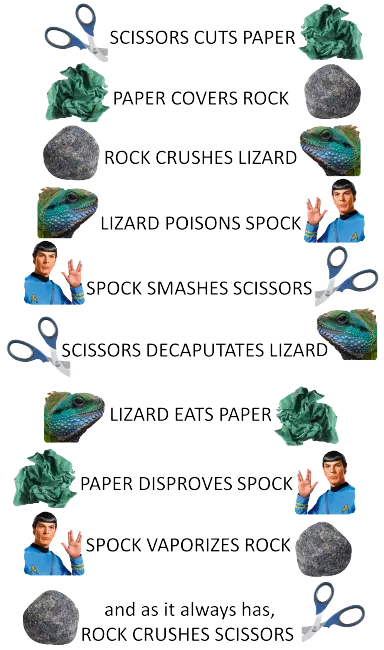

I have designed this game not only for fun but also as a refreshing break from your day. Here's why I believe my approach can help you recharge:
The Power of Nature: Research has shown that exposure to nature, even through images, can lower stress levels, improve mood, and enhance mental well-being. That's why I've incorporated beautiful, calming backgrounds inspired by macro nature photography into my game. These tranquil images can help create a serene gaming atmosphere that promotes relaxation and mindfulness.
The Magic of Classical Music: Classical music has long been recognized for its ability to soothe the mind and lift the spirits. Certain pieces can even help improve concentration and creativity. That's why I've included a collection of classical music pieces for you to choose from while playing the game. Let the music transport you to a world of calm and tranquility.
The Sensory Combination: Combining the visual beauty of nature and the harmonious sounds of classical music creates a unique sensory experience that can significantly enhance your relaxation. As you play the game, you're not just engaging your problem-solving skills, you're also immersing yourself in an environment designed to reduce stress and promote positive emotions.
So, take a moment for yourself. Explore different moods with my selection of backgrounds,
enjoy classical music collection, and let the game take you on a journey away from stress.
Remember, this game is not just about winning or losing, it's about taking a well-deserved pause and recharging
your mind.
Enjoy the journey!
I've added a few features to make your gaming experience more personalized and enjoyable.
Background change: You'll notice a 'Change Mood' button on your screen. This feature allows you to choose from a variety of calming, pastel-colored backgrounds inspired by macro nature photography. Feeling a little more energetic? Or maybe you want a serene, calming environment? Just click the 'Change Mood' button and select the background that suits your current mood. The back and forward chevrons let you explore the different options; to navigate use the and buttons.
Classical Music Collection: To complement your visual experience, I've also included a collection of classical music pieces. You can control the audio by clicking on the button to start the music.
Don't feel like listening to music? No problem! Just click on the button for some quiet playtime.
If you feel like exploring the music collection further, use and chevrons to skip through the pieces. And don't worry about replaying your favorite piece - once chosen, it will play in a loop until you decide to change it or the game is closed.
Rules: If at any point during the game you need a refresher on the rules, simply click the 'Rules' button to open this dialog again. I am here to ensure your gaming experience is seamless and fun!
Rock, Paper, Scissors, Lizard, Spock is a fun and strategic expansion of the traditional hand game we all know and love - Rock, Paper, Scissors.
The classic game of Rock, Paper, Scissors (RPS) has a rich history, believed to have originated in China during the Han Dynasty (around 200 BC). The game, known as "Jan-ken" in Japan, eventually made its way to the West. If you would like to learn more, read the article "How rock paper scissors is played around Asia" publeshed on the internet resourse Medium and History Daily's article "Rock, Paper, Scissors Goes Back To Ancient China". It's a game of chance, psychology, and strategy, where rock crushes scissors, scissors cuts paper, and paper covers rock.
The extended version - Rock, Paper, Scissors, Lizard, Spock - was invented by Sam Kass and Karen Bryla. This expansion introduces two new elements: Lizard and Spock, increasing the game's complexity and reducing the chances of a round ending in a tie. Despite its initial rejection by Hasbro, the game found its fame when it was popularized by "The Big Bang Theory", the show's producer, was granted permission by Kass and Bryla to use the game on the show.
The game was first introduced to the public in an episode of "The Big Bang Theory" titled "The Lizard-Spock Expansion". In this episode, the characters Sheldon and Raj use the game to settle a dispute about what to watch on TV. Later on, in the episode "The Rothman Disintegration", Sheldon explains the rules of the game to Barry Kripke as they decide who gets the office of a retiring professor by playing Rock, Paper, Scissors, Lizard, Spock.
The game operates on the same basic principle as Rock, Paper, Scissors but includes two additional weapons: the Lizard (formed by the hand as a sock-puppet-like mouth) and Spock (formed by the Star Trek Vulcan salute). The introduction of these new elements reduces the chances of a round ending in a tie, making the game even more exciting and strategic. The rules are as follows:
1. Symbolism: The game's gestures each represent a classic science-fiction element. The "rock" represents a basic weapon, "paper" stands for knowledge or civilization, "scissors" symbolizes advanced technology, "lizard" embodies nature, while "Spock" is indicative of the sci-fi genre itself.
2. International Recognition: The game has fans worldwide, not just because of its association with "The Big Bang Theory", but also due to its unique twist on the classic Rock, Paper, Scissors game. The added complexity and reduced probability of a tie have made it a popular variant in many countries.
3. Strategy and Psychology: On my travels, whilst creating this page, I came across of a very interesring article published in online version of "Psycology Today" magazine called "The Surprising Psychology of Rock-Paper-Scissors; plus, 9 research-based strategies for victory." The article explains that the game is not just about luck. It also involves strategy and psychology. While the game is based on chance, players often try to predict their opponents' moves based on their previous choices, adding a layer of psychology to the game. There's even a "World Rock Paper Scissors Society" that holds championships and discusses the intricate strategies involved in playing.
4. Pop Culture Impact: Aside from "The Big Bang Theory", the game has been referenced in other popular culture outlets, including video games, other TV shows, and various internet memes. This increased exposure has made Rock, Paper, Scissors, Lizard, Spock one of the most well-known variants of the traditional game.
5. Education: Because of its combination of chance and reasoning, the game is often used in education, particularly in programming and mathematics classes. It's a practical example of the concepts of probability, randomness, and game theory. You can read more about it in this Khan Academy article. The game is also used to teach pupels about the importance of fair play. This video is a great example of how the game can be used to teach students about the importance of fair play.
1. Game Theory: Game theory involves the study of mathematical models of strategic interaction among rational decision-makers. In the context of Rock, Paper, Scissors, Lizard, Spock, players must make a decision about what to play based on what they think the other player will do. If a player can accurately predict what the other player will do, they can select the winning move. However, if both players are using the same logic, this can lead to an ongoing cycle of trying to outthink the other.
2. Probability: With five options in the game (Rock, Paper, Scissors, Lizard, Spock), the probability of winning, losing, or tying the game changes. If all players choose their moves randomly, the chances of winning, losing, or tying each round are equal (20%). However, in reality, human players often show patterns in their choices, which can be exploited to increase the chances of winning.
3. Randomness: In an ideal game against a computer that chooses its moves completely randomly, the best strategy would also be to choose your moves randomly. This way, your moves are unpredictable, and you avoid falling into any patterns that a smart opponent could exploit. However, creating true randomness is a challenge even for computers, as they rely on algorithms, which are deterministic by nature.
4. Playing Against Another Player: When playing against another human, the game becomes more psychological. People are not perfectly random and often follow patterns or have biases towards certain moves. By observing your opponent's choices, you can often predict their next move with better than chance accuracy. This is where the strategic element of Rock, Paper, Scissors, Lizard, Spock comes into play.
5. Playing Against a Computer: When playing against a computer, the outcome largely depends on how the computer's strategy is programmed. If it's programmed to choose its moves randomly, the best counter-strategy is to also choose your moves randomly. However, more advanced programs might use algorithms to analyze your past moves and predict your next one, similar to playing against a human. In this case, the best strategy is to try to be as random as possible. But that, most likely, will not help you if ever have to play against Janken, a robot arm that capable of winning a game of Rock Paper Scissors 100 percent of the time. If you would like to learn more about this robot and many other interesting facts about the game, I encourage you to read this article from the "Popular Mechanics" magazine website: "The Long, Winding History of Rock Paper Scissors".
One last thing. You, probably, noticed that mamy of the sources I have provided links to on this page are mentioning story about the most famous use of Rock Paper Scissors game. The story about Takashi Hashiyama, the president of Maspro Denkoh Corporation, decided to use a game of Rock Paper Scissors to choose between Christie's and Sotheby's for selling his company's art collection worth about $20 million in 2005. He said he believed this was the best way to decide between two things which are equally good. I found this story fascinating and decided to investigate it further to establish if it is a true story or just a myth, and to learn more facts about this story. If you like me 'suffer with curiosity' and would like to learn more about this story, read this article by Alina Cohen published on Artsy website: "When A Game of Rock, Paper, Scissors Decided a $20-Million Auction Consignment".
I really hope that my game will help you to relax and recharge, and, perhaps, learn something new.
I also hope that you will enjoy playing it as much as I enjoyed creating it.
Now, let's play!